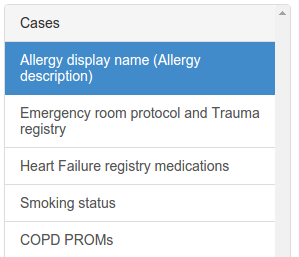
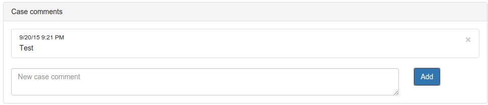

An email will be sent to participants with a user-specific link.
Either save the email or bookmark the link (or both) to access the
terminology binding application. The link looks like this:
http://lincoln.imt.liu.se:8080/?token=eyJ0iwer8uUOIJerw8jerij...
followed by several more characters. The strange characters
contains the user's ID and is signed to allow only persons with
the right link to access the application.
From left to right, the menu contains (hold mouse over text)

Select a case by clicking on the case title in the panel to the left. If there are unsaved changes you will be asked to save or cancel the changes before switching case.
Each case has a description which could help interpreting the elements which are to be bound to the terminologies.
There are some different type of cases which include different elements for binding.
For each element in a case there is a row consiting of (hold mouse over text)
the type or source of the code. For SNOMED CT, this is indicating that a pre-coordinated or a grouping of codes is used. For the alternative terminologies, this is the actual terminology used (ICD10, ATC, etc.).
For the alternative terminologies, the following order of priority applies:
| Full coverage | The meaning of the information model part fully corresponds to the terminology/classification part |
| Inferred coverage | The full meaning of the information model part is given only by the context provided by the information model, and that meaning fully corresponds to the terminology/classification part |
| Partial coverage | The meaning of the information model part comes close to the meaning of the concept |
| No coverage | There is terminology/classification part that comes close to the meaning of the information model part |
| Out of scope | The meaning of the text is not in any of the categories selected for this study The information model parts selected should all be in scope of this study, thus this category is not applicable. |
If the assessment of the binding is not full coverage, a comment should preferably be given.

Comments can be case wide or element specific. Case-wide comments are provided in the box under the case elements. Element-specific comments are provided by clicking the comment symbol () to the right in the element row. The "Add" button must be clicked to add the comment. To save the comment the whole case must also be saved.
Comments can be deleted by clicking on the × button to the right of the comment.
It is recommended to provide comments whenever there is some unclarity on how to bind an element.
The case must be saved by clicking the "Save" button below the case-wide comment box. Any unsaved changes may be discarded by clicking the "Cancel" button.